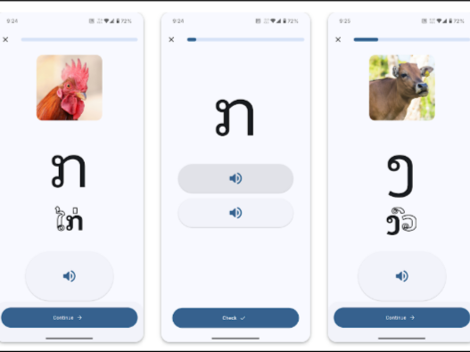
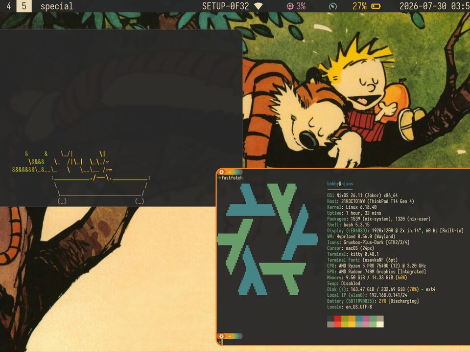
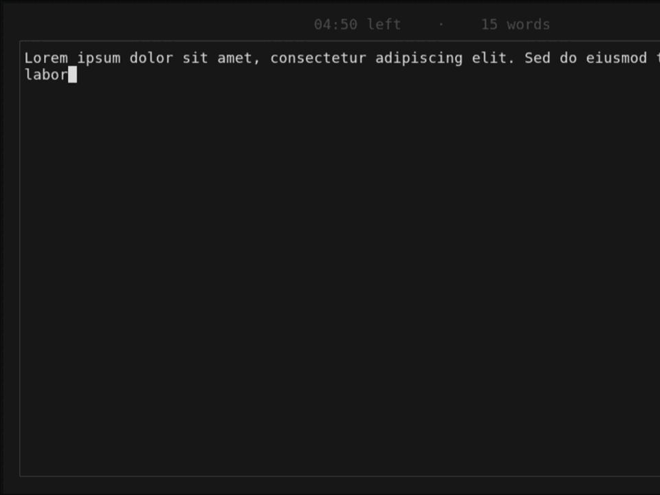
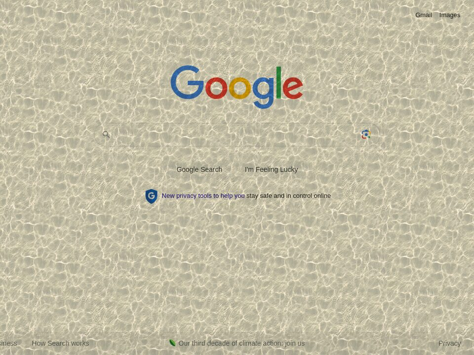
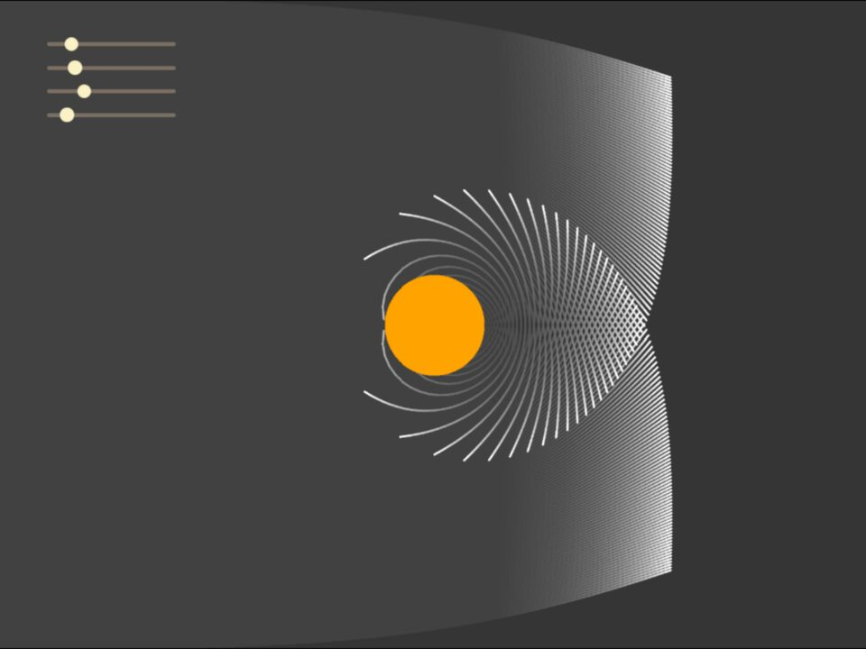

bobby sills
contact: bobbysills [at] bobbysills [dot] dev
15 y/o working out of vientiane, laos. currently working on ai research for algoverse.
projects
-

read lao
a language learning app for the lao language. uses spaced repeition with lessons and exercise to get you reading in lao.
-

nixos config
my custom built nixos configuation. it uses a minimal hyprland base styled with gruvbox.
-

danger-write
a writing app that erases your words if you stop typing. hit the time limit or word count to survive and keep your text.
-

texturez
a browser extension that lays a texture over any website. it has paper, water, sand, and more.
-

black hole simulation
a realistic physics simulation of a black hole built with p5js. you can adjust the variables to understand how the light travels.
-

ti-nspire games
nine games for the ti-nspire cx ii, written in ti-nspire lua. snake, chess, wordle, klondike and more, all drag-and-drop.